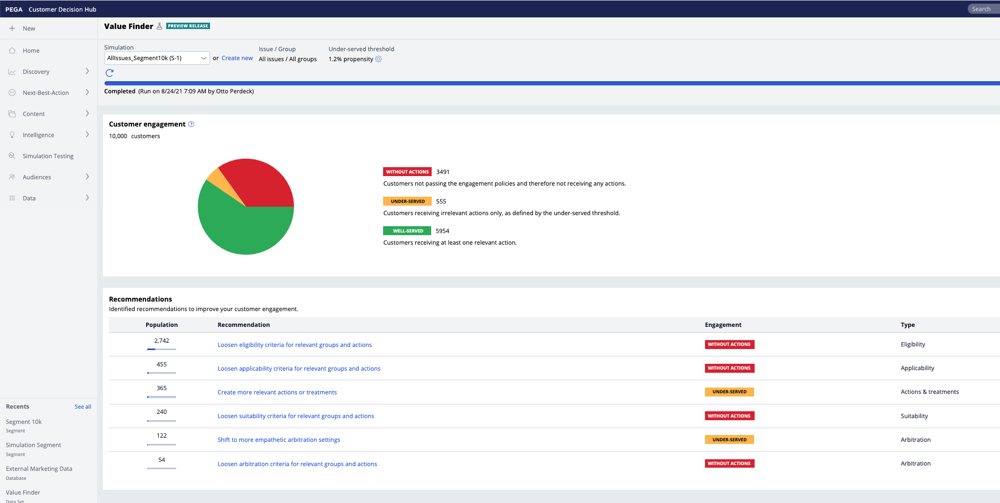

Value Finder analysis#
Every Value Finder simulation populates a dataset, the pyValueFinder dataset. This dataset contains a lot more information than is what is currently presented on screen.
The data held in this dataset can be analysed to uncover insights into your decision framework.
CDH tools has been updated to provide a notebook for some pre-configured analysis of the Value Finder dataset. This analysis can be used to supplement your Value Finder simulation whilst we add these features formally to the product.
In the data folder we’ve stored a copy of such a dataset, generated from an (internal) demo application (CDHSample).
This page shows an example how the data can be used for additional analyses.
First, let’s look at the results as presented in Pega:
For the sample provided, the relevant action setting is 1.2%. There are 10.000 customers, 3491 without actions, 555 with only irrelevant actions and 5954 with at least one relevant action.
Now, let’s import our class, read the data and recreate this view and supplement it with some advanced analysis of the pyValueFinder dataset. Just like with the ADMDatamart class, you can supply your own path and filename as such:
ValueFinder(path = 'path-to-data', filename="Data-Insights_pyValueFinder_timestamp_GMT.zip")
If only a path is supplied, it will automatically look for the latest file. It is also possible to supply a dataframe as the ‘df’ argument directly, in which case it will use that instead. Lastly, there is now also an additional dataset in cdh tools, which is what we’ll be using.
[2]:
from pdstools import ValueFinder, datasets
import polars as pl
vf = datasets.SampleValueFinder()
Data import took 0.5 seconds
Transforming to polars... Took: 0.0 seconds
Generating: Customer Summary... Took: 0.05 seconds
Generating: Counts per stage... Took: 0.01 seconds
As we can see, it has found a file on the GitHub repo and imports it straight from there. It also prints out some extra information about some calculations, which can be suppressed by supplying the keyword ‘verbose=False’.
Since there is only one dataset, the data is simply stored in the attribute ‘df’. We heavily filter out the dataset for performance reasons, so the data will look like this:
[3]:
vf.df.head(5)
[3]:
| pyStage | pyIssue | pyGroup | pyChannel | pyDirection | CustomerID | pyName | pyWorkID | pyModelPropensity | pyPropensity | FinalPropensity |
|---|---|---|---|---|---|---|---|---|---|---|
| str | str | str | str | str | str | str | str | f64 | f64 | f64 |
| "Applicability" | "Sales" | "DepositAccount... | "SMS" | "Outbound" | "Customer-1" | "StudentCheckin... | "Opp_NBA_AlDF_S... | 0.269231 | 0.269231 | 0.278077 |
| "Applicability" | "Usage" | "Mobilebanking" | "SMS" | "Outbound" | "Customer-100" | "GetTheUMobileA... | "Opp_NBA_AlDF_S... | 0.5 | 0.5 | 0.713095 |
| "Applicability" | "Collections" | "Recommendation... | "SMS" | "Outbound" | "Customer-1000" | "SetupAutopayTo... | "Opp_NBA_AlDF_S... | 0.5 | 0.5 | 0.421306 |
| "Applicability" | "Sales" | "DepositAccount... | "SMS" | "Outbound" | "Customer-10000... | "StudentCheckin... | "Opp_NBA_AlDF_S... | 0.269231 | 0.269231 | 0.244777 |
| "Applicability" | "Sales" | "Bundles" | "SMS" | "Outbound" | "Customer-1001" | "StudentChoice" | "Opp_NBA_AlDF_S... | 0.15 | 0.15 | 0.24831 |
This is already enough information to generate the same piechart as shown in platform, but to replicate the same values, we would need to compute the propensity threshold. In this case, the quantile of 0.052 of the propensity distribution seems to represent the same counts as in platform. Whilst we see the final pie chart after arbitration which correlates, it is also possible to view the same pie chart after each engagement policy stage. Simply call the plotPieCharts() function on the
data:
[4]:
vf.plotPieCharts(0.052, verbose=False)
---------------------------------------------------------------------------
UnboundLocalError Traceback (most recent call last)
Cell In [4], line 1
----> 1 vf.plotPieCharts(0.052, verbose=False)
File ~/Documents/Code/pdstools-working/pega-datascientist-tools/python/docs/source/articles/../../../pdstools/valuefinder/ValueFinder.py:458, in ValueFinder.plotPieCharts(self, start, stop, step, propType, verbose)
455 visible = False
456 for i, stage in enumerate(self.NBADStages):
457 data = (
--> 458 self.countsPerThreshold[quantile][1]
459 .filter(pl.col("pyStage") == stage)
460 .drop("pyStage")
461 )
462 fig.add_trace(
463 go.Pie(
464 values=list(data.collect().to_numpy())[0],
(...)
479 i + 1,
480 )
481 steps = []
UnboundLocalError: cannot access local variable 'quantile' where it is not associated with a value
By hovering over the rightmost pie chart, you can see the numbers match up exactly to that shown in the value finder simulation. What’s more, we don’t just show the counts in the final arbitration stage, but also the counts of the eligibility, applicability, and the suitability stages. This view shows you the movement of customers from having at least one relevant action to only irrelevant actions and no actions over the application of the engagement policies. This will show you the most impactful stage of your policies.
Now, of course, if a customer is well served or not, depends heavily on what we consider to be well served. After the application of eligibility engagment policies we choose the relevant action setting. This is set at the 5th percentil of engagement policies. We can plot what that will look like as such, where the dotted line is that set threshold:
[5]:
vf.plotPropensityThreshold()
---------------------------------------------------------------------------
ImportError Traceback (most recent call last)
Cell In [5], line 1
----> 1 vf.plotPropensityThreshold()
File ~/Documents/Code/pdstools-working/pega-datascientist-tools/python/docs/source/articles/../../../pdstools/valuefinder/ValueFinder.py:355, in ValueFinder.plotPropensityThreshold(self, sampledN, stage)
353 for ptype in propensities:
354 plotdf = data[ptype].to_list()
--> 355 temp = ff.create_distplot(
356 [plotdf], ["value"], show_rug=False, show_hist=False
357 )
358 tempdf = pd.DataFrame(
359 {"x": temp["data"][0]["x"], "y": temp["data"][0]["y"]}
360 )
361 figs.add_trace(
362 go.Scatter(
363 x=tempdf["x"],
(...)
371 col=1,
372 )
File /Library/Frameworks/Python.framework/Versions/3.11/lib/python3.11/site-packages/plotly/figure_factory/_distplot.py:180, in create_distplot(hist_data, group_labels, bin_size, curve_type, colors, rug_text, histnorm, show_hist, show_curve, show_rug)
177 if rug_text is None:
178 rug_text = []
--> 180 validate_distplot(hist_data, curve_type)
181 utils.validate_equal_length(hist_data, group_labels)
183 if isinstance(bin_size, (float, int)):
File /Library/Frameworks/Python.framework/Versions/3.11/lib/python3.11/site-packages/plotly/figure_factory/_distplot.py:49, in validate_distplot(hist_data, curve_type)
44 raise exceptions.PlotlyError(
45 "curve_type must be defined as " "'kde' or 'normal'"
46 )
48 if not scipy:
---> 49 raise ImportError("FigureFactory.create_distplot requires scipy")
ImportError: FigureFactory.create_distplot requires scipy
These different propensities represent the raw propensities from the models (pyModelPropensity), the propensities which may be overridden by the random control group (pyPropensity) and the final propensity from a prediction (FinalPropensity). In a prediction, Thompson Sampling may have been applied, smoothing the final distribution.
We can also look at the propensity distributions across the different stages. Simply call plotPropensityDistribution().
[6]:
vf.plotPropensityDistribution()
---------------------------------------------------------------------------
ImportError Traceback (most recent call last)
Cell In [6], line 1
----> 1 vf.plotPropensityDistribution()
File ~/Documents/Code/pdstools-working/pega-datascientist-tools/python/docs/source/articles/../../../pdstools/valuefinder/ValueFinder.py:303, in ValueFinder.plotPropensityDistribution(self, sampledN)
301 if len(data) > sampledN:
302 data = data.sample(sampledN)
--> 303 temp = ff.create_distplot(
304 [data["pyModelPropensity"].to_list()],
305 ["pyModelPropensity"],
306 show_rug=False,
307 show_hist=False,
308 )
309 tempdf = pd.DataFrame(
310 {"x": temp["data"][0]["x"], "y": temp["data"][0]["y"]}
311 )
312 fig = go.Scatter(
313 x=tempdf["x"],
314 y=tempdf["y"],
(...)
317 line_color="rgba(0,0,0)",
318 )
File /Library/Frameworks/Python.framework/Versions/3.11/lib/python3.11/site-packages/plotly/figure_factory/_distplot.py:180, in create_distplot(hist_data, group_labels, bin_size, curve_type, colors, rug_text, histnorm, show_hist, show_curve, show_rug)
177 if rug_text is None:
178 rug_text = []
--> 180 validate_distplot(hist_data, curve_type)
181 utils.validate_equal_length(hist_data, group_labels)
183 if isinstance(bin_size, (float, int)):
File /Library/Frameworks/Python.framework/Versions/3.11/lib/python3.11/site-packages/plotly/figure_factory/_distplot.py:49, in validate_distplot(hist_data, curve_type)
44 raise exceptions.PlotlyError(
45 "curve_type must be defined as " "'kde' or 'normal'"
46 )
48 if not scipy:
---> 49 raise ImportError("FigureFactory.create_distplot requires scipy")
ImportError: FigureFactory.create_distplot requires scipy
So there is a spread out distribution of propensities - making the selection of the relevant action setting an important choice as this will influence whether customers are considered as having at least one relevant action or only irrelevant actions.
While we can create this pie chart for one threshold, we can also do this for a range of them. To do this, simply supply three arguments to the plotPieCharts() function: start, stop and step. These correspond to a range of propensity quantiles for which we want to compute the counts. In the background, this will generate the aggregated counts per stage, which we can plot as such:
[7]:
vf.plotPieCharts(start=0.01, stop=0.5, step=0.01, verbose=False)
---------------------------------------------------------------------------
UnboundLocalError Traceback (most recent call last)
Cell In [7], line 1
----> 1 vf.plotPieCharts(start=0.01, stop=0.5, step=0.01, verbose=False)
File ~/Documents/Code/pdstools-working/pega-datascientist-tools/python/docs/source/articles/../../../pdstools/valuefinder/ValueFinder.py:458, in ValueFinder.plotPieCharts(self, start, stop, step, propType, verbose)
455 visible = False
456 for i, stage in enumerate(self.NBADStages):
457 data = (
--> 458 self.countsPerThreshold[quantile][1]
459 .filter(pl.col("pyStage") == stage)
460 .drop("pyStage")
461 )
462 fig.add_trace(
463 go.Pie(
464 values=list(data.collect().to_numpy())[0],
(...)
479 i + 1,
480 )
481 steps = []
UnboundLocalError: cannot access local variable 'quantile' where it is not associated with a value
Note the slider at the bottom: playing around with this, you can easily see how choosing a different threshold changes the view of a customer. This makes intuitive sense: if you consider an action ‘good’ from a lower propensity threshold, then more customers will be well served than if you consider an action ‘good’ from a higher propensity threshold.
While this is a nice ‘slice’ of the distribution at a given threshold, we can also show a bit more information. Call plotPropensityDistributionPerThreshold() to show this same distribution, but then with the threshold on the x-axis. By default, it considers the quantiles, but if you supply the target parameter to be 'Propensity', then it will update to that instead.
[8]:
vf.plotDistributionPerThreshold(verbose=False)
[9]:
vf.plotDistributionPerThreshold(target='Propensity', verbose=False)
---------------------------------------------------------------------------
ValueError Traceback (most recent call last)
Cell In [9], line 1
----> 1 vf.plotDistributionPerThreshold(target='Propensity', verbose=False)
File ~/Documents/Code/pdstools-working/pega-datascientist-tools/python/docs/source/articles/../../../pdstools/valuefinder/ValueFinder.py:551, in ValueFinder.plotDistributionPerThreshold(self, target, **kwargs)
549 for quantile, data in self.countsPerThreshold.items():
550 target2 = data[0] if target.casefold() == "propensity" else quantile
--> 551 df.append(data[1].with_column(pl.lit(target2).alias(target)))
552 df = pl.concat(df).collect().to_pandas().set_index(target)
553 fig = px.area(
554 df.rename(
555 columns={
(...)
566 template="none",
567 )
File /Library/Frameworks/Python.framework/Versions/3.11/lib/python3.11/site-packages/polars/utils.py:498, in deprecate_nonkeyword_arguments.<locals>.decorate.<locals>.wrapper(*args, **kwargs)
496 if len(args) > num_allowed_args:
497 warnings.warn(msg, DeprecationWarning, stacklevel=2)
--> 498 return function(*args, **kwargs)
File /Library/Frameworks/Python.framework/Versions/3.11/lib/python3.11/site-packages/polars/internals/lazy_functions.py:1217, in lit(value, dtype, allow_object)
1215 except AttributeError:
1216 item = value
-> 1217 return pli.wrap_expr(pylit(item, allow_object))
ValueError: could not convert value '[0.0002688172043010753]' as a Literal
One area to consider is how your action distribution changes through the stages. Simply call the plotFunnelChart() function for an overview of this funnel effect throughout each stage. As a rule of thumb, if there are only a few actions in each stage, this is not a good sign. If certain actions are completely filtered out from one stage to the next, it may also be a warning of agressive filtering. In this case, let’s also use the ‘query’ functionality to only look at actions in the
'Sales' issue
[10]:
vf.plotFunnelChart('Action', query=pl.col('pyIssue')=='Sales')
Of course this is quite a lot of information. If instead we want to look at the distribution of issues over each stage, simply supply the level parameters as 'Issue':
[11]:
vf.plotFunnelChart('Issue')
Lastly, it may also be interesting to look at the distribution of groups over the different stages. Here, let’s again filter on the 'Sales' issue only.
[12]:
vf.plotFunnelChart('Group', query=pl.col('pyIssue')=='Sales')